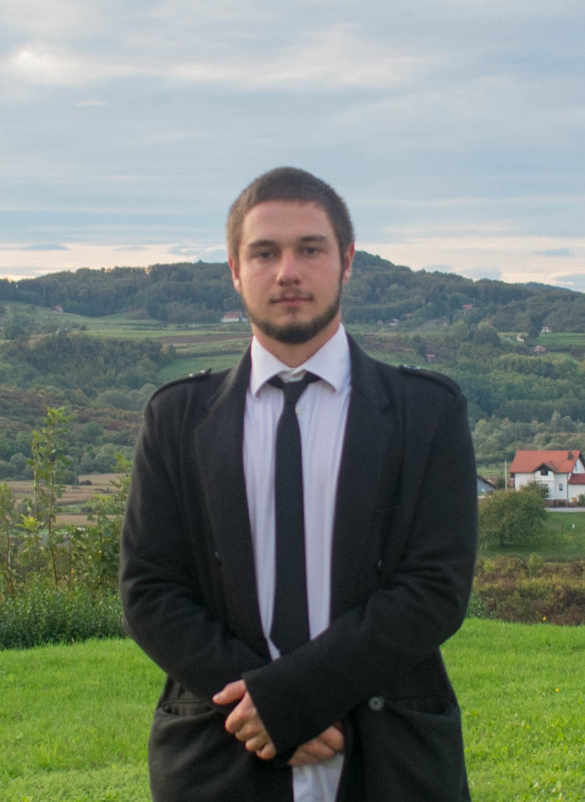

About Me

Hello! I’m Mateo, a 23-year-old Master’s student at the Faculty of Informatics and Digital Technologies (FIDIT), holding a Bachelor’s degree in Informatics. I’m passionate about programming, data parsing, and data visualization, with a strong focus on transforming raw data into meaningful insights.
Outside of coding, you’ll often find me hiking with a camera in hand, capturing moments and telling stories through photography. It’s my way of combining creativity with exploration.
I’m driven by continuous learning and always looking for new challenges that help me grow both technically and creatively.
Feel free to explore my projects and reach out, I’d love to connect and create something great together.
Projects
Projects
- FlyTrajectroyApp (Python): Flight trajectory visualization and data processing.
- PDF Parsing Project (Python, PDF parsing): Parsing PDF documents and extracting structured data.
- CRORIS / CROSBI API Project (Python, REST API, JSON): Fetching and processing scientific/research information.
- SnapsBlock (Flutter): Mobile app for tracking scores while playing the Snaps card game.
Work Experience
Customer Support – iGaming Industry
During my time in the iGaming industry, I gained valuable experience in customer support by assisting users, resolving issues efficiently, and ensuring a smooth and positive user experience.
Education
Elektrostrojarska škola Varaždin
Web Development High School
Faculty of Informatics and Digital Technologies (FIDIT)
- Bachelor’s Degree in Informatics (2021–2025)
- Master’s Degree in Informatics (currently enrolled)
GitHub Projects
You can find some of my projects on my GitHub profile. These projects showcase my coding skills and passion for software development.
"Built with stability and simple design in mind."